従来結果を残したまま、実績あるCalculiX CrunchiX 2.20で再解析しました。曲げに不利な一次HEX8を避け、二次20節点・低減積分のC3D20Rを使用しています。
| 2D薄板モデル | 18モード、先頭8モード 22.56～230.09 Hz | 3 mmで8打点RMS・波形・FFTを再生成 |
|---|---|---|
| 独自3D FEM | 16モード、先頭8モード 22.325～307.053 Hz | 3 mmで静止画・動画・波形・FFTを再生成 |
| Solist-AI予備評価 | 1隠れ層16ノード、平均99.44% | 合成データでの単一点8分類 |
| CalculiX標準 | 30モード、13.34651～804.8854 Hz | 3 mmで8打点・2,048点応答と動画4本を再生成 |
| CalculiX高周波 | 198モード、最大5,967.227 Hz | 3 mmで25.6 kHz・50 ms・1,280点応答を再生成 |
| CalculiX XY回帰 | 中心8点＋四隅32点、境界プローブ10点 | 50打点応答と座標回帰比較を生成 |
*MODAL DYNAMIC, DIRECTと*MODAL DAMPING, MODAL=DIRECTの追加パラメータは未認識として警告されましたが、全ジョブはJob finishedで終了し、固有モードからの動的応答合成と出力生成は完了しています。警告原文は各run logに保存しています。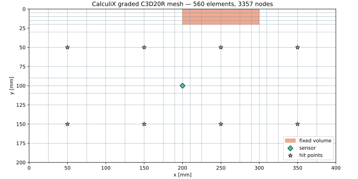
固定領域はY方向5 mm、x=200/300 mm付近は10～15 mm、中央センサ付近は10～15 mm間隔です。3 mm板を厚さ方向1.5 mm × 2要素で表しています。
応力・曲率変化が比較的小さい外側は25 mmまで広げ、均一格子より少ない560要素で二次要素を使えるようにしました。
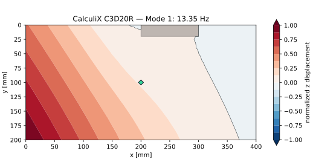
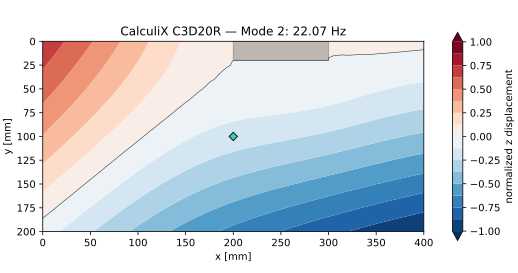
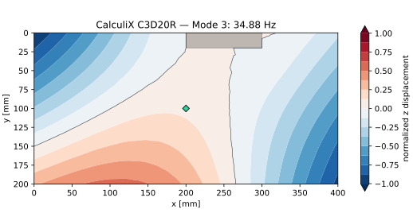
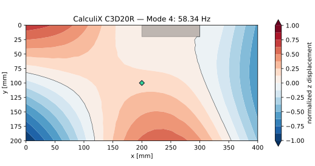
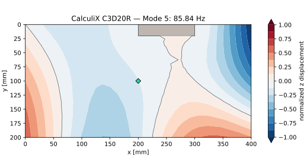
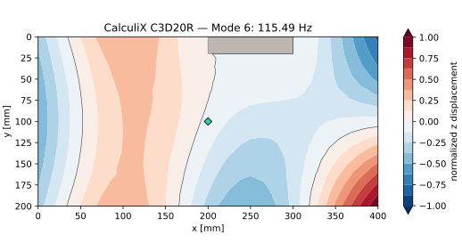
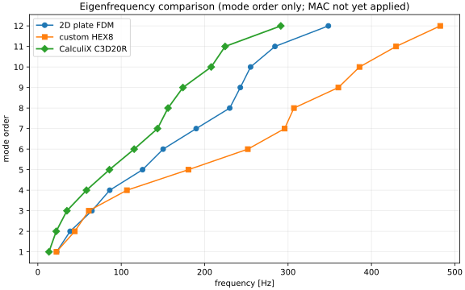
| Mode | CalculiX C3D20R | 2D板モデル / 独自HEX8 |
|---|---|---|
| 1 | 13.35 Hz | 22.56 / 22.33 Hz |
| 2 | 22.07 Hz | 38.71 / 44.32 Hz |
| 3 | 34.88 Hz | 64.89 / 61.10 Hz |
| 4 | 58.34 Hz | 86.21 / 106.80 Hz |
CalculiX結果が低いことは、独自一次HEX8のせん断ロッキングによる過剰剛性の疑いと整合します。ただし実測FRFとメッシュ収束による確認前に確定値とはしません。
各打点へ2サンプル幅の三角形単位力積を与え、CalculiXの*MODAL DYNAMICで中央センサ変位を計算しました。6.4 kHz・2,048点の変位を加速度へ換算し、Hann窓でFFTしています（数値微分による高域減衰はFFT側で補正済み）。
3 mm条件でCalculiXが出力した30個の質量正規化固有モードを用い、各打点の単位Z方向力積に対する320 msの表面変位を10秒へ引き延ばしています。第1モード（13.35 Hz）の約4.3周期を含みます。8画面は共通振幅スケールです。パース表示の高さは最大変位を±18 mmとして視覚的に強調したもので、実寸変形ではありません。星が打点、菱形が中央センサです。60 ms版も3 mm条件で再生成しています。
Hz / 198 modes
3 mm板でKX134-1211のZ軸機械帯域5.6 kHzを覆う25.6 kHz・50 ms応答です。
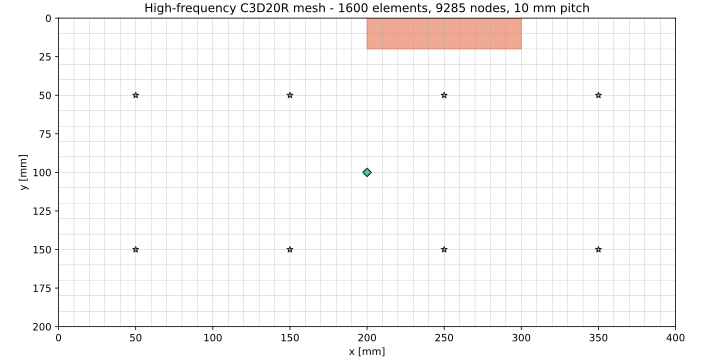
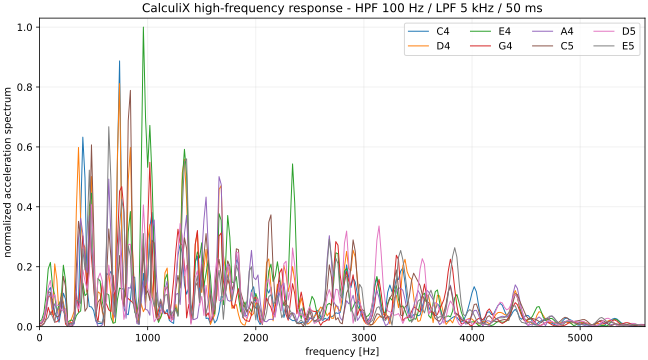
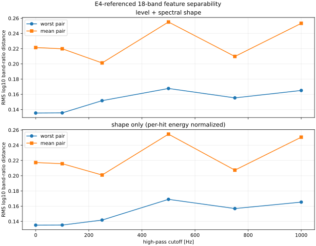
10 mmメッシュは板厚比較用の予備解析です。高周波の最終値にはさらに細かいメッシュとの収束比較が必要です。詳細は高周波CalculiX解析仕様を参照してください。
実機の3 mm板と連打改善候補の5 mm板について、板厚以外の材料、面内メッシュ、固定範囲、8打点、減衰比1.2%、25.6 kHz・50 ms条件を揃えて比較しました。
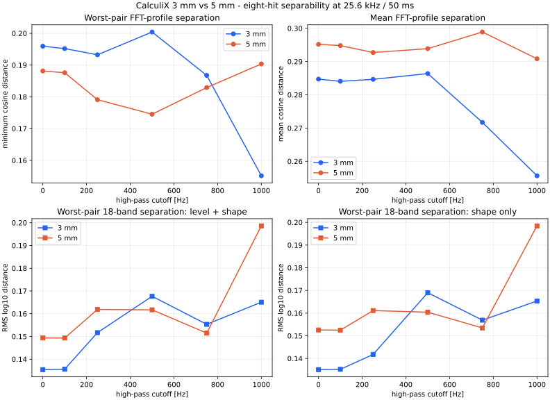
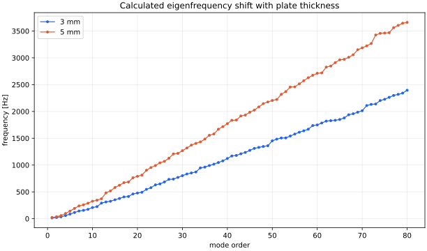
| 100 Hz HPF | 3 mm | 5 mm | 5 mm / 3 mm |
|---|---|---|---|
| FFT最悪ペア距離 | 0.1952 | 0.1876 | 0.961（−3.9%） |
| FFT平均距離 | 0.2841 | 0.2948 | 1.038（＋3.8%） |
| 18帯域・レベル＋形状 最悪距離 | 0.1356 | 0.1493 | 1.101（＋10.1%） |
| 18帯域・形状のみ 最悪距離 | 0.1352 | 0.1525 | 1.128（＋12.8%） |
3 mm板について、中心8点だけで学習する条件と、中心8点に各エリア四隅32点を追加する条件を比較しました。評価には学習へ含めないエリア境界10点を使っています。学習件数の効果を除くため、主比較は両条件とも1,280件に揃えました。
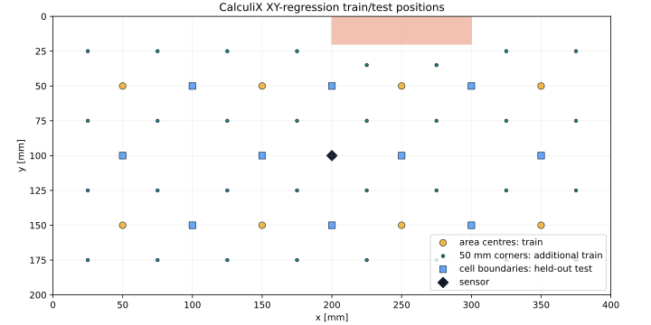
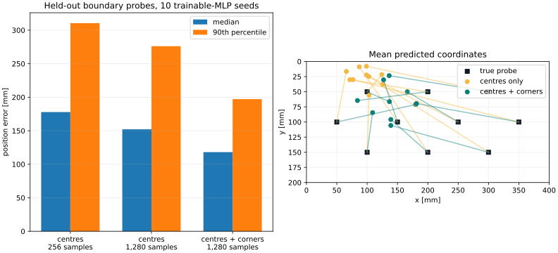
| 学習条件 | 固有座標数 | 学習件数 | 距離誤差 中央値 | 90%点 | 50 mm以内 |
|---|---|---|---|---|---|
| 中心のみ・通常 | 8 | 256 | 177.8 mm | 310.5 mm | 1.2% |
| 中心のみ・件数一致 | 8 | 1,280 | 152.2 mm | 276.1 mm | 4.0% |
| 中心＋四隅 | 40 | 1,280 | 118.1 mm | 197.2 mm | 10.9% |
波形は25.6 kHz・50 ms、100～5,000 Hz、減衰比1.2%。各決定論的応答へ時間ずれ、利得、減衰変動、0.2～2% RMSノイズを加えています。これは実測精度の予測ではなく、同一の理想化FEM内で学習点カバレッジの効果を比較する試験です。詳細はXY格子解析仕様を参照してください。
| ソルバー | CalculiX CrunchiX 2.20 | Debian公式パッケージ |
|---|---|---|
| 要素 | C3D20R | 20節点二次六面体・低減積分 |
| 固有値 | *FREQUENCY, STORAGE=YES | SPOOLES + ARPACK、標準30モード |
| 動解析 | *MODAL DYNAMIC, DIRECT | 6.4 kHz・320 ms、および25.6 kHz・50 ms |
| 減衰 | 直接モード減衰1.2% | 全採用モード |
| 質量 | CalculiX整合質量行列 | 独自版の集中質量とは異なる |
| 材料 | E=3.2 GPa、ν=0.35、ρ=1,180 kg/m³ | 等方線形PMMA |
| 標準板厚 | 3 mm、z=-1.5～1.5 mm | 349節点のXYZを固定 |
| 比較板厚 | 5 mm、z=-2.5～2.5 mm | 同じ面内固定範囲 |
| イメージ | acrylic-pan-calculix:2.20 | 既存Python FEMとは別イメージ |
|---|---|---|
| コンテナ | acrylic-pan-calculix-run | 終了時に削除 |
| ネットワーク | --network none | CVATから分離 |
| 出力 | web/assets/simulation/calculix | 3 mm基準成果物を更新 |
.\run-calculix.ps1入力デッキ、FRD、EIG、DAT、実行ログを含む詳細は CalculiX基準解析仕様 に記録しています。